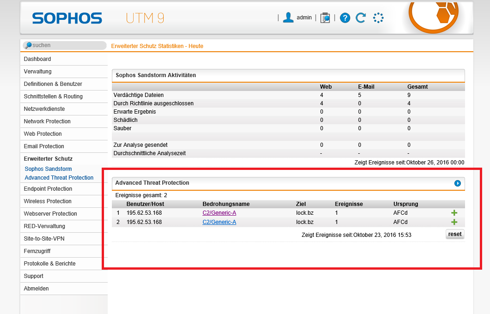
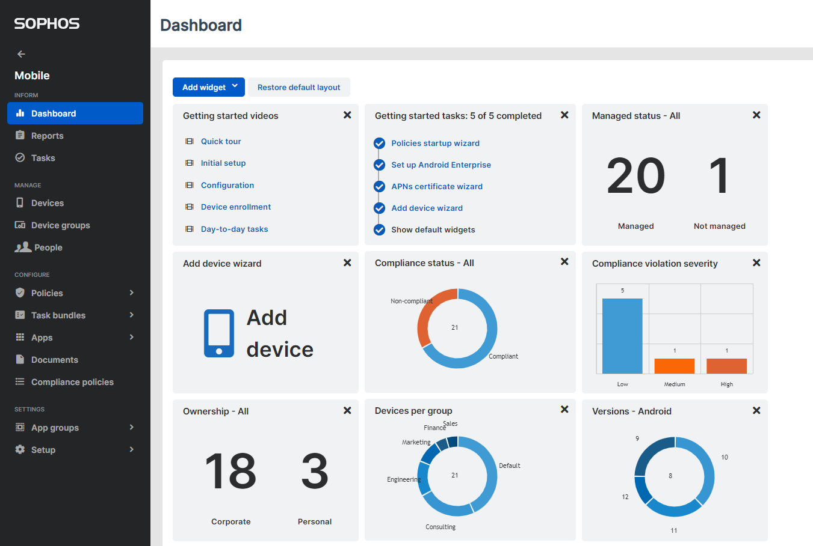

Sophos is a cybersecurity solution that offers detection and response, firewall, cloud, and managed service solutions for network security and unified threat management. Its software provides critical malware, phishing website, and ransomware prevention. While security specialists are familiar with the brand Sophos antivirus, the program is only excellent for essential malware detection. Sophos protects your device from malware, hackers, and other dangerous invaders.
Advanced Threat Protection: Sophos provides protection against advanced threats such as ransomware, zero-day exploits, and other malware. Their threat detection and response capabilities are designed to detect and respond to threats in real-time, helping to prevent data breaches and other security incidents. 
Network Security: Sophos offers a range of network security solutions, including firewalls, secure web gateways, and VPNs. Their network security products are designed to protect networks from a wide range of threats, including malware, phishing, and other cyber attacks.
Endpoint Protection: Sophos provides endpoint protection solutions for Windows, Mac, and mobile devices. Their endpoint security products are designed to protect devices from a wide range of threats, including malware, ransomware, and phishing attacks.
Cloud Security: Sophos offers cloud security solutions for public and private cloud environments. Their cloud security products are designed to protect cloud workloads from threats such as malware, data breaches, and other cyber attacks.
Email Security: Sophos provides email security solutions that help protect businesses from spam, phishing attacks, and other email-borne threats. Their email security products are designed to block malicious emails before they can reach users' inboxes.
Encryption and Data Protection: Sophos offers encryption and data protection solutions that help businesses protect sensitive data from unauthorized access. Their encryption and data protection products are designed to protect data both in transit and at rest.
Mobile Security: Sophos provides mobile security solutions that help protect mobile devices from threats such as malware, phishing attacks, and data breaches. Their mobile security products are designed to provide a wide range of security features, including antivirus, app control, and web filtering. 